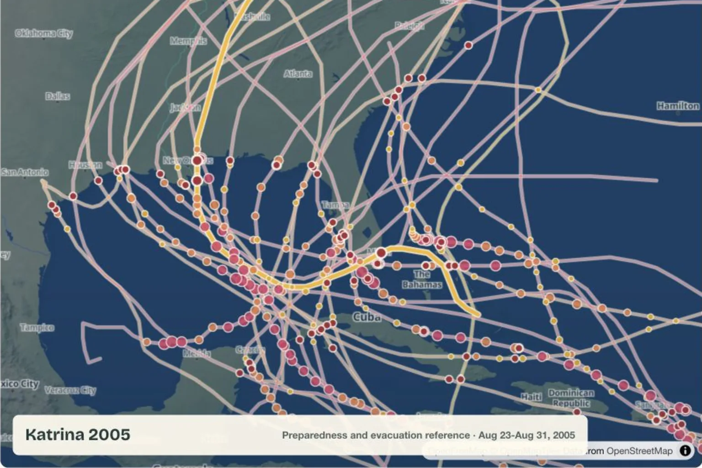

Kit guides
The main preparedness library. Every kit includes the full guide plus its printable checklist.
If you live on the Gulf or Atlantic coast, hurricane season is part of your calendar. This site covers the preparation piece: what to pack, what to understand, and where to start.

Coastal guides
Local risk changes the standard kit. Choose a regional guide for the agencies, hazards, and additions that matter where you live.
2026 season update
Updated June 18: NOAA's May 21 Atlantic outlook calls for a 55% chance of a below-normal season, with 8-14 named storms, 3-6 hurricanes, and 1-3 major hurricanes in the forecast range. NOAA also makes the key planning point clearly: the seasonal outlook is not a landfall forecast, and one storm can still make the season serious for a specific household or community.
Use this in-season check to replace expired water, batteries, medications, pet supplies, and document copies; confirm your evacuation zone and local alert subscriptions; and bookmark the NOAA outlook and National Hurricane Center before a named storm changes supply availability.
It's about care. You prepare because you have people, pets, medications, documents, and routines worth protecting. A hurricane kit is not panic shopping. It's a set of decisions made early enough that landfall doesn't get to make them for you.
Most hurricane content is either frightening or useless. Federal checklists with all the warmth of a legal disclaimer. Affiliate roundups where every recommendation earns a commission. This site is neither: plain-language guidance for Gulf and Atlantic coast households, written by someone who actually thought it through.
No ads. No affiliate links. Just specific guidance, printable checklists, and state pages you can send to someone before a storm is on the map.
Two ways in: start with the coastal guide for your state if you want to understand your local risk first, or go straight to the kit library if you just need a list.
The main preparedness library. Every kit includes the full guide plus its printable checklist.

Use the geography first: local risk, regional supply additions, and the official sources to bookmark before the season.

Compare selected historical Atlantic hurricane tracks from NOAA/NHC best-track data.
Support this site
No ads. No affiliate links. If this made your hurricane prep clearer, you can help keep the site free and up to date.
Editorial note
This page was written and reviewed by Michael Hendrick on June 18, 2026. Hurricane Coast is an independent preparedness project with no ads or affiliate links.
This guidance is checked against Ready.gov, the National Hurricane Center, the National Weather Service, FEMA, and the state or local emergency management sources linked on the page.
Use this page to prepare early. When local officials issue evacuation orders, shelter instructions, weather alerts, or medical guidance, follow those primary sources first.